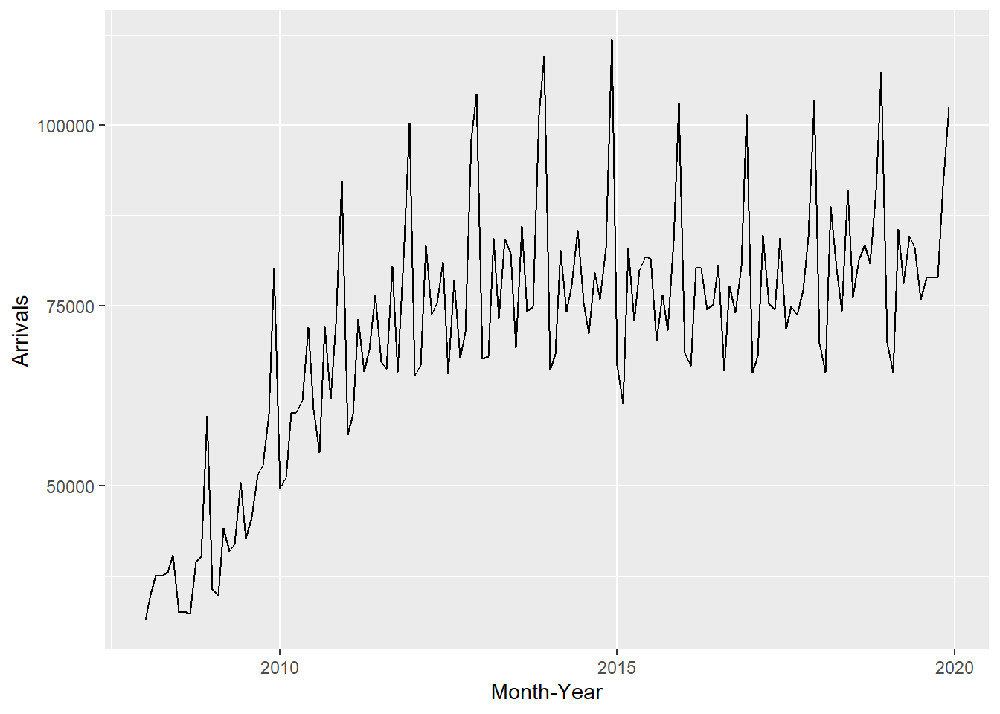
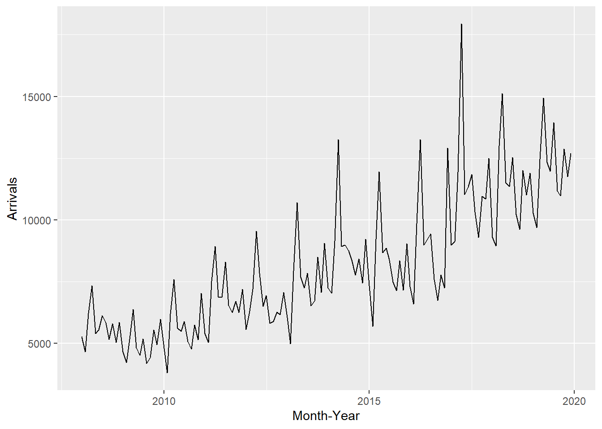
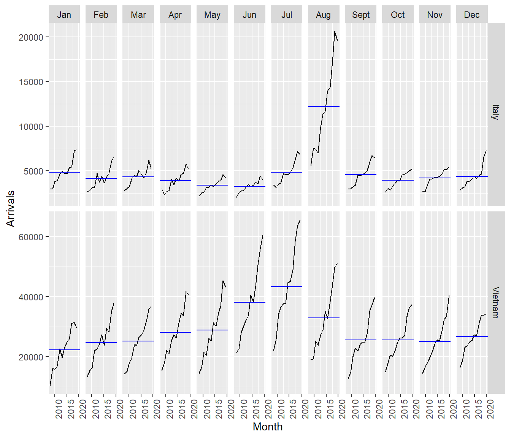
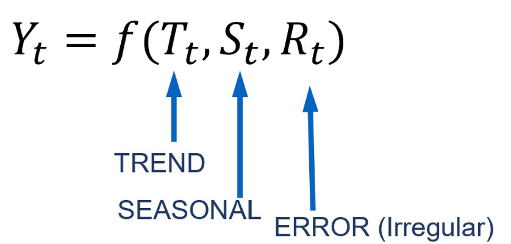

pacman::p_load(tidyverse, tsibble, feasts, fable, seasonal)In-class_Ex07: Visualising, Analysing and Forecasting Time-series Data: tidyverts methods
7.2 Getting Started
7.2.1 Importing the data
ts_data <- read_csv(
"visitor_arrivals_by_air.csv")ts_data$`Month-Year` <- dmy(
ts_data$`Month-Year`)ts_data# A tibble: 144 × 34
`Month-Year` `Republic of South Africa` Canada USA Bangladesh Brunei China
<date> <dbl> <dbl> <dbl> <dbl> <dbl> <dbl>
1 2008-01-01 3680 6972 31155 6786 3729 79599
2 2008-02-01 1662 6056 27738 6314 3070 82074
3 2008-03-01 3394 6220 31349 7502 4805 72546
4 2008-04-01 3337 4764 26376 7333 3096 76112
5 2008-05-01 2089 4460 26788 7988 3586 64808
6 2008-06-01 2515 3888 29725 8301 5284 55238
7 2008-07-01 2919 5313 33183 9004 4070 80747
8 2008-08-01 2471 4519 27427 7913 4183 66625
9 2008-09-01 2492 3421 21588 7549 3160 52649
10 2008-10-01 3023 4756 25112 7527 2983 54423
# ℹ 134 more rows
# ℹ 27 more variables: `Hong Kong SAR (China)` <dbl>, India <dbl>,
# Indonesia <dbl>, Japan <dbl>, `South Korea` <dbl>, Kuwait <dbl>,
# Malaysia <dbl>, Myanmar <dbl>, Pakistan <dbl>, Philippines <dbl>,
# `Saudi Arabia` <dbl>, `Sri Lanka` <dbl>, Taiwan <dbl>, Thailand <dbl>,
# `United Arab Emirates` <dbl>, Vietnam <dbl>, `Belgium & Luxembourg` <dbl>,
# Finland <dbl>, France <dbl>, Germany <dbl>, Italy <dbl>, …7.2.3 Conventional base ts object versus tibble object
ts_data_ts <- ts(ts_data)
head(ts_data_ts) Month-Year Republic of South Africa Canada USA Bangladesh Brunei China
[1,] 13879 3680 6972 31155 6786 3729 79599
[2,] 13910 1662 6056 27738 6314 3070 82074
[3,] 13939 3394 6220 31349 7502 4805 72546
[4,] 13970 3337 4764 26376 7333 3096 76112
[5,] 14000 2089 4460 26788 7988 3586 64808
[6,] 14031 2515 3888 29725 8301 5284 55238
Hong Kong SAR (China) India Indonesia Japan South Korea Kuwait Malaysia
[1,] 17103 41639 62683 37673 27937 284 31352
[2,] 21089 37170 47834 35297 22633 241 35030
[3,] 23230 44815 64688 42575 22876 206 37629
[4,] 17688 49527 58074 26839 20634 193 37521
[5,] 19340 67754 57089 30814 22785 140 38044
[6,] 19152 57380 70118 31001 22575 354 40419
Myanmar Pakistan Philippines Saudi Arabia Sri Lanka Taiwan Thailand
[1,] 5269 1395 18622 406 5289 13757 18370
[2,] 4643 1027 21609 591 4767 13921 16400
[3,] 6218 1635 28464 626 4988 11181 23387
[4,] 7324 1232 30131 644 7639 11665 24469
[5,] 5395 1306 30193 470 5125 11436 21935
[6,] 5542 1996 25800 772 4791 10689 19900
United Arab Emirates Vietnam Belgium & Luxembourg Finland France Germany
[1,] 2652 10315 1341 1179 6918 11982
[2,] 2230 13415 1449 1207 7876 13256
[3,] 3353 14320 1674 1071 8066 15185
[4,] 3245 15413 1426 768 8312 11604
[5,] 2856 14424 1243 690 7066 9853
[6,] 4292 21368 1255 624 5926 9347
Italy Netherlands Spain Switzerland United Kingdom Australia New Zealand
[1,] 2953 4938 1668 4450 41934 71260 7806
[2,] 2704 4885 1568 4381 44029 45595 4729
[3,] 2822 5015 2254 5015 49489 53191 6106
[4,] 3018 4902 1503 5434 35771 56514 7560
[5,] 2165 4397 1365 4427 24464 57808 9090
[6,] 2022 4166 1446 3359 22473 63350 96817.2.4 Converting tibble object to tsibble object
ts_tsibble <- ts_data %>%
mutate(Month = yearmonth(`Month-Year`)) %>%
as_tsibble(index = `Month`)7.3 Visualising Time-series Data
ts_longer <- ts_data %>%
pivot_longer(cols = c(2:34),
names_to = "Country",
values_to = "Arrivals")7.3.1 Visualising single time-series: ggplot2 methods
ts_longer %>%
filter(Country == "Vietnam") %>%
ggplot(aes(x = `Month-Year`,
y = Arrivals))+
geom_line(size = 0.5)
ts_longer %>%
filter(Country == "Malaysia") %>%
ggplot(aes(x = `Month-Year`,
y = Arrivals))+
geom_line(size = 0.5)
ts_longer %>%
filter(Country == "Myanmar") %>%
ggplot(aes(x = `Month-Year`,
y = Arrivals))+
geom_line(size = 0.5)
9.3.2 Plotting multiple time-series data with ggplot2 methods
very hard to see
ggplot(data = ts_longer,
aes(x = `Month-Year`,
y = Arrivals,
color = Country))+
geom_line(size = 0.5) +
theme(legend.position = "bottom",
legend.box.spacing = unit(0.5, "cm"))
In order to provide effective comparison, facet_wrap() of ggplot2 package is used to create small multiple line graph also known as trellis plot.

7.4.2 Visual Analysis of Seasonality with Cycle Plot
In the code chunk below, cycle plots using gg_subseries() of feasts package are created. Notice that the cycle plots show not only seasonal patterns but also trend.
tsibble_longer <- ts_tsibble %>%
pivot_longer(cols = c(2:34),
names_to = "Country",
values_to = "Arrivals")tsibble_longer %>%
filter(Country == "Vietnam" |
Country == "Italy") %>%
gg_subseries(Arrivals)
7.5 Time series decomposition
Time series decomposition allows us to isolate structural components such as trend and seasonality from the time-series data.

7.5.1 Single time series decomposition
tsibble_longer %>%
filter(`Country` == "Vietnam") %>%
ACF(Arrivals) %>%
autoplot()
7.5.2 Multiple time-series decomposition
tsibble_longer %>%
filter(`Country` == "Vietnam" |
`Country` == "Italy" |
`Country` == "United Kingdom" |
`Country` == "China") %>%
ACF(Arrivals) %>%
autoplot()
7.7 Visual Forecasting
7.7.1 Time Series Data Sampling
First, an extra column called Type indicating training or hold-out will be created by using mutate() of dplyr package. It will be extremely useful for subsequent data visualisation.
vietnam_ts <- tsibble_longer %>%
filter(Country == "Vietnam") %>%
mutate(Type = if_else(
`Month-Year` >= "2019-01-01",
"Hold-out", "Training"))vietnam_train <- vietnam_ts %>%
filter(`Month-Year` < "2019-01-01")7.7.2 Exploratory Data Analysis (EDA): Time Series Data
vietnam_train %>%
model(stl = STL(Arrivals)) %>%
components() %>%
autoplot()
7.7.8 Step 5: Forecasting future values
fit_ETS <- vietnam_train %>%
model(`SES` = ETS(Arrivals ~ error("A") +
trend("N") +
season("N")),
`Holt`= ETS(Arrivals ~ error("A") +
trend("A") +
season("N")),
`damped Holt` =
ETS(Arrivals ~ error("A") +
trend("Ad") +
season("N")),
`WH_A` = ETS(
Arrivals ~ error("A") +
trend("A") +
season("A")),
`WH_M` = ETS(Arrivals ~ error("M")
+ trend("A")
+ season("M"))
)fit_ETS %>%
tidy()# A tibble: 45 × 4
Country .model term estimate
<chr> <chr> <chr> <dbl>
1 Vietnam SES alpha 1.00
2 Vietnam SES l[0] 10313.
3 Vietnam Holt alpha 1.00
4 Vietnam Holt beta 0.000100
5 Vietnam Holt l[0] 13673.
6 Vietnam Holt b[0] 526.
7 Vietnam damped Holt alpha 1.00
8 Vietnam damped Holt beta 0.000110
9 Vietnam damped Holt phi 0.978
10 Vietnam damped Holt l[0] 13257.
# ℹ 35 more rowsfit_ETS %>%
report()# A tibble: 5 × 10
Country .model sigma2 log_lik AIC AICc BIC MSE AMSE MAE
<chr> <chr> <dbl> <dbl> <dbl> <dbl> <dbl> <dbl> <dbl> <dbl>
1 Vietnam SES 2.79e+7 -1453. 2912. 2912. 2920. 27515844. 5.99e7 3.91e+3
2 Vietnam Holt 2.86e+7 -1453. 2917. 2917. 2931. 27718599. 6.03e7 3.92e+3
3 Vietnam damped Holt 2.86e+7 -1453. 2918. 2919. 2935. 27556629. 5.97e7 3.92e+3
4 Vietnam WH_A 5.33e+6 -1336. 2706. 2711. 2755. 4684271. 8.56e6 1.72e+3
5 Vietnam WH_M 4.55e-3 -1300. 2635. 2640. 2684. 3046059. 3.42e6 5.20e-2fit_ETS %>%
forecast(h = "12 months") %>%
autoplot(vietnam_ts,
level = NULL)
7.7.9 Fitting ETS Automatically
fit_autoETS <- vietnam_train %>%
model(ETS(Arrivals))
fit_autoETS %>% report()Series: Arrivals
Model: ETS(M,A,M)
Smoothing parameters:
alpha = 0.1613503
beta = 0.0001021811
gamma = 0.0001030996
Initial states:
l[0] b[0] s[0] s[-1] s[-2] s[-3] s[-4] s[-5]
15001.12 212.3552 0.9167302 0.8311728 0.8739287 0.8690543 1.104668 1.485584
s[-6] s[-7] s[-8] s[-9] s[-10] s[-11]
1.311207 0.9917759 1.014187 0.8973028 0.8816768 0.8227129
sigma^2: 0.0046
AIC AICc BIC
2634.751 2640.119 2683.759 7.7.10 Fitting Fitting ETS Automatically
gg_tsresiduals(fit_autoETS)